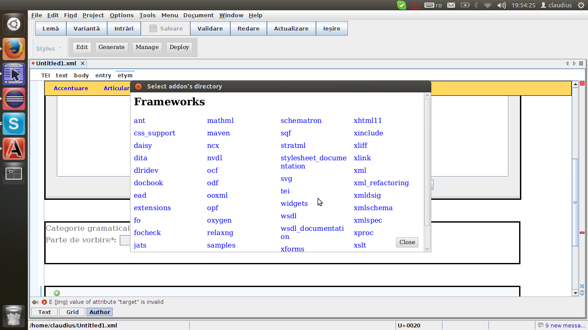

This Oxygen plugin is intended to automatically generate Oxygen frameworks only by using XQuery + HTML + CSS.
These frameworks offer a huge help for editing XML not in Text view, but in Author view (a very nice feature Oxygen offers). The users are able to edit their documents in an HTML page-like interface, thus reducing the errors, and having a much more controlled way of editing.
The main requirement for user is to edit a file called addon.xq, which is the main descriptor for the framework.
UpThis is to be done in the known, normal, way for Oxygen. The framework type is to be "external" and has to be saved in the [OXYGEN_DIR]/frameworks directory, as any other normal external framework.
The user should add the association rules, as needed, as well as any other CSS files needed for styling the Author view of the documents, or any other files.
After creation, the user has to press button Edit on the Addon Builder's toolbar, and select the framework directory from [OXYGEN_DIR]/frameworks directory.
Some processes will occur, and an XQuery template file will be automatically opened, in order to be edited.
The editing should follow the guidelines stated in EXPath User Agent Module.
The main idea is that the user needs to add HTML templates, actions, listeners, and / or observers to addon.xq, as it is presented below.
UpThe plugin currently support the HTML templates mentioned below. After declaration, an HTML template has to attached to an XML element in the document.
input of type 'text'
ua:template("syll",
<template>
<input data-ua-ref="{text()}" size="40" />
</template>
),
ua:attach-template(ua-dt:css-selector("syll"), "syll")
textarea
ua:template("def",
<template>
<textarea data-ua-ref="{text()}" cols="70" rows="7" data-contentType="text/plain" />
</template>
),
ua:attach-template(ua-dt:css-selector("def"), "def")
The needed actions are triggered by various general, standard or custom, events, or by node mutations.
For instance, one can use the attribute
onclick
of a
button
(as was shown above) , or can add a
listener for events, as it is shown below.
ua:add-event-listener($ua:document, "load", oxy:execute-action-by-name('Author/No_tags')),
ua:add-event-listener($ua:document, "load", oxy:execute-action-by-class('ro.kuberam.oxygen.addonBuilder.actions.KeepAuthorView')),
ua:add-event-listener($ua:document, "load", "setIntialValue")
The node mutations trigger actions by using mutations observers, defined as below:
ua:observer("changedValueAttrForFormElementObserver", "changedValueAttrForFormElement"),
ua:connect-observer("changedValueAttrForFormElementObserver", ua-dt:xpath-selector('//form'),
map {
"attributes" := "true",
"attributeFilter" := "['type']"}
)
Definition of an action, as is required by Oxygen, is as follows:
ua:action(
"deleteElement",
map {
"name" := "Delete",
"description" := "",
"largeIconPath" := "",
"smallIconPath" := "${framework}/resources/images/delete.png",
"accessKey" := "",
"accelerator" := ""
},
delete nodes (. | preceding-sibling::term[1])
)
Up
Each time user considers the editing is done, one should press the
button
Generation on the
Addon Builder's toolbar. A dialog window will let user know if the
generation ran well.
In order to check the changes, the user have to restart Oxygen, and open a sample file the framework was designed for.
The framework archive, as jar, can be found in the 'target' directory located in the framework directory within [OXYGEN_DIR]/frameworks, namely in ${frameworkDir}/target.
Up<library
name="[OXYGEN_DIR]/jre/lib/jfxrt.jar" /> (in Linux this is /home/claudius/oxygen/16/jre/lib/jfxrt.jar)
in the runtime section of the file ${pluginInstallDir}/plugin.xml
(in Linux, this is /home/claudius/.com.oxygenxml.author/extensions/v16.1/plugins/http___claudius108.users.sourceforge.net_repos_addon_builder_plugin_addon.xml/addon-builder-plugin/plugin.xml).
This limitation is solved with Oxygen 17, as the variable ${oxygenInstallDir} will be automatically expanded.
Equivalences between Oxygen java actions and actions defined in XQuery: https://docs.google.com/document/d/1DWKic-uH5vay0qZRcUXLfGclgYIoFDA2PEUb-LXYPXU/edit?usp=sharing.
UpAddress is https://raw.githubusercontent.com/claudius108/oxygen-addons/master/oxygen-addon-builder-plugin/addon.xml.
The source can be found at https://github.com/claudius108/oxygen-addon-builder-plugin.
Up